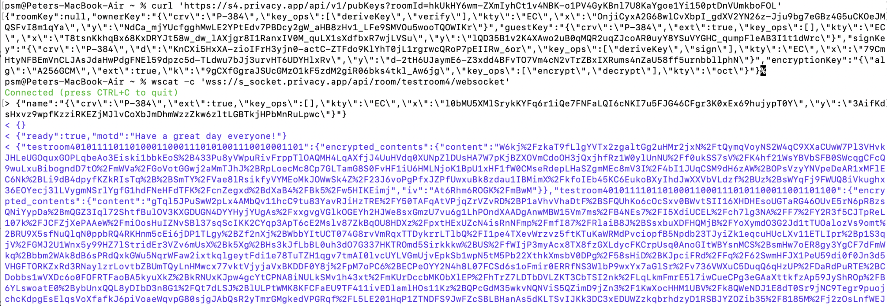

Technical Overview#
This part will give a fairly technical overview of the system(s). Make sure you’ve read through the Introduction.
Rooms#
A client connecting to a room will first check for their own participant keys in their localstorage.
If the local_storage has no participant keys for the room, that means the person joining is new to the room. A dialog box is shown to confirm that the user understands this, if not, they’re prompted to load keys from backup.
Otherwise, a new participant key is generated and stored in localstorage.
Otherwise, the client connects to websocket and sends their public participant key to the DO. The DO replies with a ‘ready’ message containing the following data from KV_local:
keys:
<room>_ownerKey
<room>_encryptionKey
<room>_signKey
<room>_guestKey (‘Null’ if not present in KV_global)
<room>_authorizationKey
MotD
(See the Room and User Keys section for details, the above is just a summary.)
If the _ownerKey is Null, the room is “non-existent” meaning it has not been created. If a participant tries to message a non-existent room, a system message is displayed to the client which says that the room has not been initiated yet. The keys (and the existence of the room) is generated by administrative tools (CLI).
If the _guestKey is Null, it is set to the public half of the first participant (who does not have the cookie, e.g., who is not Owner).
Owner and Admin#
If the participant key is the same as the roomKey, the client UI will assume that it’s the Owner. This only affects the whisper UI.
If there is a correctly formed cookie (from the SSO backend), the Chat UI will show the Admin tab, and the Chat backend will consider this participant authenticated Owner and allow Admin API calls (cookie is included in each call). Current Admin operations are: restrict a room, accept a request to join a restricted room, and set the MotD (see below).
The time to live for the cookie is one day:
token_<room>: epoch+'.’+sign(<epoch>+'_<roomId>);domain=.privacy.app;secure;samesite=strict;max-age=86400';
Where signing is done with ECDSA using <roomId>_authorizationKey (with SHA-256)
Some notes:
For an Owner to join “as Owner”, both the above cookie and the participant key (private half of the ownerKey) will need to be set, such as by using sendMessage/iFrame.
In default setup, the Owner’s (private) room owner keys need to be kept separate; in our SSO database.
If the Owner so wishes, they can generate a new pair in the SSO, overwrite the corresponding room ownerKey in KV_global, and store the private key only in their localstorage.
[internal: In a future upgrade to the membership kits, we can include the private keys for all the rooms (current and future!) on the USB. This would allow us to offer physical key recovery service for members, without ever having the private keys on a networked computer.]
Restriction is a “fire once” operation - when the Owner restricts a room, all participant clients can verify the public key of the Owner as well as the assurance from the worker back end and the separate SSO that this is indeed the Owner.
Message of the Day#
Owner can change the MotD. It’s shown every time the websocket connects (e.g. whenever you reload the room, enter it for the first time, etc).
Whisper:#
Whispers are for communication between just the Owner and one participant, and can be initiated from either party. For everyone else, the message appears in a yellow background as (whispered) unless the room is restricted. [1]
Guests can whisper to Owner by tapping the profile icon at the top right; Owners can whisper by long pressing the “Name” circle of any message.
This encrypts the message (text and image separately) using the encryption key derived from the private key of the guest and the <room>_ownerKey. [2]
The owner can whisper to anyone who has sent a message to the room once by long pressing/long clicking on the user icon for the guest they want to whisper to. This encrypts the message (text and image separately) using the encryption key derived from the private key of the owner (generated when first joined) and the public key of the guest.
To decrypt a whispered message, key generation is done using the user’s private key and the sender’s public key which is included in the message.
(A whisper precludes the need for signing the message.)
Signing:#
If a message is not whispered, it will be signed by the sender. If a message is not whispered and fails verification (sign not present/corrupted), it is displayed with a red outline.
Each part to be signed (text, image, image metadata) is signed using the sign key derived from the private key of the sender and the public half from <room>_signKey.
Each part is signed using an ‘HMAC’ key derived using the private half of the sender’s participant key or <room> key and the public half of the <room>_signKey. All 3 signs are verified using the key derived from the public key of the sender and the private half of the <room>_signKey.
Restricting a room#
When the owner restricts the room, a new encryption key is generated and stored in the local_storage. All guests who have visited the room once will be added to “Visitor Requests”. The owner will also be added to this list and automatically approved.
A restricted room will result in a conversation that nobody outside the group of participants can read (any participant can read all messages).
Any new visitor will automatically generate a new request to the Owner.
A restricted room has a green “locked” icon next to its name.
The Durable Object backend maintains a list of the public key of ‘accepted visitors’ in KV_local. The Durable Object backend also maintains a JavaScript Object of all ‘locked_keys’ wherein the ‘encrypted’ locked_key for each ‘accepted guest’ (look at the section ‘Accepting a guest’) is stored corresponding to the public half of the visitor’s participant or <room> key.
Accepting a guest#
When the room owner accepts a guest to a restricted room, the key stored in the local_storage of the owner as <room>_lockedKey will be encrypted using the encryption key derived from the private key of the owner and public key of the guest. This encrypted key will be sent to the Durable Objects backend and stored there (KV_local).
Whenever a guest joins a restricted room, if they have been accepted, this encrypted key will be sent to them as the first ‘message’ from the Websocket. The key will be decrypted using the key derived from their private key and the public key of the owner and then stored to the localstorage.
Owner Key Management#
The Owner keys are initially managed by the SSO, a bit like if they were using a password manager. However, this default setup exposes the Owner to the Institute, for whatever reason, wanting to “impersonate” them (since the membership page is the SSO service). It also exposes participants to some extent to security issues in underlying infrastructure (see the ‘Discussion’ section at the end of this document).
To give Owners an option for stronger privacy [3] they can regenerate their keys for any given room, from their membership page. When that happens, a new public ECDH key pair is created in the client. However the private key is not stored in the SSO system. The public half of this key is then signed using the current <room>_ownerKey (the key before rotation occurs). The sign and the public half of the new key are then sent to KV_global in a fetch request which stores the received value (key + sign) as <room>_ownerKey<ts>, where ts is the timestamp when it performs the store operation. (We also refer to this as ‘key rotation’ or ‘locking’ a room.)
The owner’s chat client will then make a fetch request to the Durable Object to refresh it’s maintained copy of the ownerKey in KV_local. The Durable Object pings KV_global and if the KV_global returns an ownerKey different from the ownerKey in KV_local, the DO broadcasts it to all active chat clients using websockets.
Note: In the current design, the sign which is stored along with the key is not utilized. However, in future iterations, any user will independently be able to fetch all <room>_ownerKeys (meaning all rotated keys) and verify that all room_ownerKey rotations were signed by the owner key before rotation and hence, verify that key rotations were initiated by the owner.
Note: only restricted rooms can be locked-down.
Note: once the Owner has rotated their keys, all the other participant clients will note that hereafter, only commands (such as additional key rotations) signed by this set of Owner keys are respected.
When a room is both restricted and rotated (‘locked-down’) a different lock icon is shown next to the room name.
Image (Photo) Sharing [17]#
A major design element is to accomplish scaleable, reliable, economical, secure, and private mechanisms for sharing and accessing images.
The attach icon allows you to send an image, or (on modern device/browser combinations) take a picture from the camera straight to the chat app.
The instant the image is “uploaded” (given to the web app), it is processed [4], in JPG format. This transform has as a side effect that any metadata is removed.
If the image in the message is “sent”, then in fact three versions are processed:
thumbnail - this is a (max) 20KB version of the processed image. This is transmitted using websockets and stored within the message as a DataURL (not an image link) and should appear close to instantly for all participants. The 20KB limit was originally chosen to allow the full image to fit in the KV_local. The entire object is enclosed in the (encrypted) image.
preview - this is a (max) 4MB processed image. This is stored in the KV_global (see next section) and can be retrieved by anyone who has access to the message with which it was shared (and that has the thumbnail).
full - this is the 16MB or less version of the image. If the “original” is small enough, then it is stored unaltered. If it’s bigger, then it is processed as above. [5] This is stored in the KV_global in the same way as the preview. Only the owner has access to the original.
Thus, a small thumbnail is sent and shared synchronously and immediately in the front end, and should appear almost instantly to everybody connected to that room. The larger versions are sent with eventual-consistency to KV_global-backed workers as detailed in the next section.
Image Dedup + Encryption + Storage:#
The preview and full image are stored as secure ‘objects.’ An object is a specific construct that is particular to this design. The image information itself is referred to below as ‘data’. Objects are ultimately stored in KV_global with the following information:
Their full name (also the KV_global key). The name is a 512-bit string constructed in two halves, in two steps. The first half is the first half of the SHA-512 hash of the original (unencrypted) contents, the second half is a SHA-256 hash of (final) encrypted contents.
Nonce and salt used for the encryption. These can be accessed using just the first half of the full name (prefix search).
Contents, which is the encrypted version of the padded form of the original contents.
A random 16-byte value, the verification.
A random 48-bit value, the ‘version_id’ which might be used in the future for version control on files
Starting from an image (or some other arbitrary data), the above is accomplished as follows:
The client generates the SHA-512 hash based on original data (eg image). It sends a ‘request to store’ query with the first half of this hash (the ‘partial name’); it will eventually receive a 12-byte nonce and a 16-byte salt.
While waiting for this, the client constructs the ‘shared image’ message, with the thumbnail, and forwards data and the first half of the SHA-512 hash for the compressed data (preview) and original data (full image), and sends the message.
Next, the client makes a fetch request (once each for the preview and full object) to KV_global with the first half of the full name of the file. When the KV_global receives the ‘request to store’ query, if it’s a new object, then it generates random new nonce and salt and stores those with the partial name (it doesn’t have the full name yet); if it’s not a new object, it returns previously generated values. [6]
The client prepares the data by padding it to be almost exactly the size of the nearest exponent of two (2) larger than its actual (possibly new) size, no less than 128KB (this is the “target size” mentioned above). Regardless of image, the resulting ‘preview’ thus ends up appearing to be one of only six different sizes. [7] The padding is done using ‘bit’-padding, specifically, the length is padded only in increments of 128 bits [8] up to one block less than the target size - if the target size is on a 128-bit boundary, a full 128bits are left. ‘Bit’ padding is 0x80 followed by zeroes. The last thus added block is then truncated by 4 bytes (32 bits), and the length of the original data is stored.
Next the client encrypts this padded block with a key derived from the entropy of the second half of the above first hash (using PBKDF2; 100,000 iterations; SHA-256), with the nonce and salt returned by the previous ‘request to store’ query.
Next the client generates a SHA-256 hash based on the encrypted block (which after encryption should be on a perfect exponent-of-2 boundary) and concatenates with the ‘partial name’ from earlier to form the ‘full name.’
The client then makes API calls (once each for the preview and full object) to the KV_local with the final size value (in cleartext) of the object (preview/full) (rounded up as per below); the room server inspects and approves the size (or not).
If approved, the KV_local makes a fetch request to the Ledger Backend to generate a token for the requested size. The Ledger Backend returns a token_id. The KV_local then encrypts this token_id with the public half of the LEDGER_KEY. Finally, the KV_local returns the hash of the token_id, the encrypted token_id and the hashed roomId as the storage token back to the client. [9]
The client then requests this encrypted object to be stored under the full name provided, including token approving storage usage; in reply it will receive the 16-byte verification. This encrypted object is sent asynchronously to the (non-room) worker API.
The client then generates a control message that contains the full name of previously shared (thumbnail only) image together with the verification as well as (again) the storage token. This control message would be sent with the same encryption layers as the original message containing the thumbnail.
When the backend receives the object, it independently generates the same second hash based on the encrypted object to verify the integrity. It then verifies the storage token is valid (i.e. has been created by KV_local, hasn’t already been spent and the size of the object sent to be stored does not exceed the size stored in the ledger) by making a fetch request to the ledger backend. If valid, the KV_global stores three separate entries in the RECOVERY_NAMESPACE (“D3”) -
<hashed_room_id>_<encrypted_token_id>
<hashed_token_id>_<image_id>
<image_id>_<hashed_token_id>
If this full name of the object requested to be stored exists in its storage, then it can discard the received data, and return the stored verification. If it doesn’t, it creates an entry, with the full name as the key, and saves the encrypted object [10] together with nonce and salt, generates a random 48-bit version_id, generates a random 16-byte verification, and returns that.
When a client wants to open a preview, the following happens:
The thumbnail needs to have been matched with a control message with the full name and the final verification returned by a previous storage.
The client requests to read the object based on the full name with the verification token.
When the client receives the (raw) contents, it will also receive the nonce and salt, it applies the stored (secret) key, and decrypts and displays the object.
The backend will only reply if the full name corresponds to an entry, and the verification number matches the stored verification number..
An honest client will also confirm that the partial name (and key) matches a regenerated SHA-512 hash of the decrypted object, and signal in the UI (such as a red border) and possibly ‘report’ to the backend that the object is suspect.
A few comments that follow from the above process.
This design retains the ability to de-duplicate any stored binary data, without having the ability to inspect contents.
The padding method obscures the precise length of any data, complicating any brute force attacks against contents of a compromised server: all stored objects in the same ‘bucket’ of size would have to be attacked.
The chained hashing makes it impossible for a client to fake binary contents: since the second half of the full name is a hash of the encrypted contents, the backend can check for consistency - the computational difficulty of generating a file to match a second half (equivalent to a pre-image attack) is high. A client can obviously store random data, but that’s immaterial: what’s important is for the client not to be able to design a hash collision in the full name.
A client can obviously avoid duplication by some manner of modifying the image, even trivially. But this is no different from any other encrypted storage.
The client can be dishonest about the first half of the hash, but that also does not enable any control over hash collisions.
Dishonesty in a client in constructing the full name will stay with the image sharing message, with a certain probability of being detected down the road.
Regardless of level of misuse, the “insider” privacy model (discussed at the end of this document) will still be in force. Any participant to any chat, who has access to decrypting a message with the full key to the object, can report it, or save the information for future use, as well as identify if the naming has been tampered with. If we receive a report on an object with the missing pieces of the key, we can decrypt the object in storage, and both verify whether it is correctly reported content, as well as verify integrity, such as confirming (post facto) that the client was breaking the protocol. At that point, we can overwrite the object per policy, and re-encrypt with the provided key information, such that any future access using the dishonest or manipulated object name will not yield the original, but just the take-down notice. In other words: the design deliberately allows for the party operating the server to enforce their content policy, but does not allow them to pre-emptively scan or review any content.
Another scenario is that a user shares with themselves, or in some other manner uses the service as a strongly encrypted storage, and acts maliciously. But this is no different than if they were to simply encrypt locally and only upload encrypted data to any cloud storage.
Storage Ledger Server#
A core challenge in providing long-term storage of files [18], is how to accomplish the following (a more formal treatment is here):
The system should be highly secure and private: contents at rest should be strongly encrypted, and not (easily) attributed to whomever uploaded, shared it, and/or downloaded it.
Operating expenses. In a multi-user (multi-owner) context, the costs of respective total storage usage needs to be allocated to the correct party.
The system should not allow tracing of who uploaded what (or even, preferably, when).
The system should not allow tracing of who is sharing (“re-linking”) any file.
It should not be possibly to inquire whether a file exists on the system, e.g., it should not be possible to determine if anybody has at any time stored or shared a file.
The system should be fundamentally capable of de-duplication: in other words, any file that is uploaded, should not require duplicate copies in back-end storage. This is essential for the economics of (highly) scalable cloud storage.
It should be possible for administrators of a snackabra service to “take down” any file, that they determine violates their policy, including in particular the ability to take down clearly illegal content.
Any file should end up with a ‘name’ that is globally unique, so that it will have the same identifier on any snackabra server. [19]
This becomes a heavily parameterized problem. This has been a major challenge for us to solve. To our knowledge, nobody has solved this complete set of requirements.
The design described above accomplishes most of these criteria, but we have not addressed the cost-tracking (budgeting) aspect.
There is a lot to unpack in this diagram, bear with us:
First, there are four “account balances” involved:
[A] The budget of the total service.
[B] The current budget of the room.
[C] The amount spent in total on storage.
‘[A]’ starts as the total budget for a service - let’s say 100 TB for a multi-user host. Upon creation of any room, an initial balance of (say) 1 GB is allocated to the room, ergo 1 GB goes [A] => [B]. When a room “spends” this, it requests the ledger to transfer it from the room’s “account” to the global storage [C]. (On a personal server this is much simpler: the admin simply sets [B] to whatever on a per room basis, and there is no global [A] nor [C].)
The idea is that we step-wise anonymize parts of the overall transaction (namely: store an object): generation of identifying information for the object is kept separate from the path to receive permission to store that amount of data, for example. You’ll probably need to re-read this section a few times to see how it all hangs to gether.
Second, there are three important datastores involved, “D1”, “D2”, “D3” used in this process (not counting the actual storage of data):
D1: LEDGER - separate server in multi-owner setup, internalized to the room in a personal server setup. These keeps current “account balances” of everything.
D2: LEDGER_NAMESPACE - tracks spending of approved <TID>. To spend storage space, you’re “issued” a kind of token, which is simply a reference into D2, which in turn will track if it’s been “cashed” or not.
D3: RECOVERY_NAMESPACE - tracks details to allow for anonymous recovery - garbage collection - of revoked storage etc. This is a bit complex, but it’s only relevant for multi-owner paid membership management, for a personal server you don’t need to worry much about it.
Now we can untangle the diagram a bit (you can follow along in the code [20]):
The client requests to store a file. It generates the first “half” of the name, and sends it to the storage server. What it needs is help to “construct” the “true name” for the object.
Storage server checks if the data exists already. Regardless, it replies with the assigned salt and iv to be used for the corresponding object.
The client encrypts the full set of data and sorts out padding. The blob is ready to save, and client has the “true name” of the object (”<FN>:”).
The client next requests from the room server permission to store the amount of data needed. [21]
The room checks if it has budget: it asks the Ledger to “spend” storage bytes: it generates a transaction of class “token”, with properties “size, random id, used”, and asks the ledger for an identifier (”<TID>”.
The ledger spends ‘size’ from the room’s budget ([B]->[C]), and generates <TID>. The key details are the approved size, and if it’s been “spent” yet. This is stored with a one-way hash in ‘D2’ - thus “h(<TID>)” If all is well and good, responds with <TID>.
On a personal server, step 5/6 is done locally instead, self-generating a <TID>.
The Room now creates a special object, sort of a “token”:
<hash(<TID>), R(<TID>), R(h<TID>)>. This bundle is encrypted (and padded), and returned with h(<TID>) to the client.The client is now empowered to actually request the store to be done. It sends the “magical token” along with the blob of data.
Storage now checks with the Ledger (‘D2’): the hash of the <TID> (“h(<TID>)”), checks that the ‘size’ is correct, and “spends” it (finalizing [B]->[C]).
Storage now updates ‘D3’ with some special info:
h(R(<room>)_R(<TID>), h(<TID>)_<FN>, <FN>_h(<TID>)for offline recovery / garbage collection. (you can see the keys stowed away byhandleStoredata()[23]). TheR()notation shows it has been encrypted by the LEDGER_KEY [24] .Finally, the storage server will generate a random verification number - unique for every <FN>. When the client receives it, it can finally construct the control message with all the details about the object, which altogether we loosely refer to as the manifest. This is sent to all chat room participants.
Various things to note:
The room server manages it’s own “budget”; you can think of it as a “bucket” or almost as a directory. On a personal server that you run yourself, you can modify this budget directly for any room. On a multi-user service, there’s a separate “Ledger Server” which manages storage budgets and accounting across all accounts and users.
A new room is initialized with an initial total budget - current default is 1 GB. It can “independently” authorize messages and files up to that total amount. Once that’s exceeded, then on a personal server you need to directly change the budget using the CLI, on a multi-user server it needs to request more allocation from the Ledger Backend.
Note that in around step [5], neither the Room nor the Ledger actually need to know what object is being stored, just it’s size (which is padded to specific set of size options to further obfuscate correlation between specific objects and coresponding storage budget “spend”).
You can think of part of the transactions around <TID> as a sort of local cryptocurrency, a “token” in the old-fashioned sense: it’s a thing that can be “printed” by asking the Ledger to approve [B]->[C], and cashed in by “spending” it with the storage server ([C]).
The manifest can be used anywhere: command line, other clients, etc. There’s two versions of it - one that is share with everybody, and one that includes the additional bit of information that enables future revocation of storage budget(s). [22]
Storage Revocation#
[To be Written]
Group Security#
For a number of security-oriented messaging apps, the “group” aspect has been a challenge. See for example:
More is Less: On the End-to-End Security of Group Chats in Signal, WhatsApp, and Threema https://eprint.iacr.org/2017/713.pdf
(A number of Wired articles, to be added)
Attack of the Week: Group Messaging in WhatsApp and Signal (blog) - https://blog.cryptographyengineering.com/2018/01/10/attack-of-the-week-group-messaging-in-whatsapp-and-signal/
The Signal app and protocol being the most common, we’ll comment in relation to it’s design. The group chat capability was design while moxie0 was still with Open Whisper. [11] Some issues:
The “every client broadcasts” nature of group communication is still going through the Signal servers; this leaves enough metadata available (whether collected or not) to easily reconstruct group membership, and in addition, because of the authentication model, all the phone numbers of participants. Even though the server “notionally” doesn’t know group membership (there is no DB that explicitly tracks it), the data necessary is unavoidably generated in the normal course of the service. [12] Anonymity bestowed in principle by the broadcast model does not in fact exist if the service has a monopoly on delivering the messages.
Our design in contrast unashamedly sets up a websocket addressable worker to receive and re-transmit messages. This in fact puts control at the hands of the client with respect to how it connects to the server - it can “pop up” from a VPN or ToR or any manner that allows it to connect.
… next point was about random number generation … took a while to figure out actually entropy in Signal groupId … in the end I think their 2014 generation was just 31 bits, namely Java’s max integer value (signed 32 bit) .. new system is 128, but it’s generated in the client, so that’s not super great, more on that soon …
Binary Serialized Format#
Images are generally stored in a binary serialized format. We may also use this format for binary protocols (web socket), where a more correct term might be “wire transfer format.”
For storage, data in key-value stores in various Cloudflare services typically support either a string (JSON) object, or a purely binary object. [13] If we were to Base64 encode these, it would cause a 8/6 (1.33) factor expansion, which matters less for a thumbnail, but on full sized images starts adding up. We’ve therefore designed [14] a simple manner in which to store a more or less arbitrary JS data structure in binary format.
Format: The first four bytes (32 bits) stores the size of the “metadata”, which in turn is a (JSON.stringified) dictionary in the form of “{ key1: dataSize1, key2: dataSize2, …}”. The data parts are all Uint8Array objects of arbitrary size, as given by dataSize1 etc, which are all assembled (concatenated) and stored as a single binary blob. The reverse (extract) operation first extracts the size of the metadata, allowing JSON.parse() to run against a well-formed object, and then assembles back into the dictionary the same keys, but with matching binary objects. This binary format does not limit the size of objects that can be included in any practical sense. [15] The net effect is that a JS dictionary of the form ‘{key1: arrayBuffer1, key2:arrayBuffer2, …}’ can be assembled and extracted, essentially a pickler that works for our specific use case.
Static Room UI (“Local Client”)#
In the plan and the design, but not finalized, is the intent to provide an open source, static, single-html-page web application version of the client. We refer to this as a “local client” and also “static client”. This would allow any user to join any room by loading from local storage a static page, then loading a previously exported set of keys, and join any rooms detailed in those keys.
Also to be implemented is support for full export of all messages, in a manner that can be synchronized (merged) upon joining any other server (see Stand-Alone Server). UPDATE: this now works!
An important use case is for participants to always be able to join a room (starting with the first time) by copy-pasting the room name and server address into the static client, and thereby have greater confidence that the keys they’re using were truly generated locally.
A perhaps more obscure use case is the option for participants in a room to use local clients as a part of the strict locking-down process, to account for any possible combinations of compromised clients amongst any of the participants. This process is currently under design. UPDATE: this is almost fully in place!
A simpler, likely more common, use case is a room with a small number of participants, where the owner has locked the room, and all participants including Owner have exported their respective sets of keys. Then, they should all be able to rejoin the room, from respective systems, all loading from static files.
Below is a demonstration that current design works for this usage model. It shows connecting straight to a chat room endpoint from the command line, using ‘curl’ for API endpoints and ‘wscat’ for websocket connection. Ergo, users can script their own tools. We believe this approach remedies many of the historically observed problems with any web-based UI. [16] was largely addressed by development of the subtle.crypto standard )
Command Line Tools#
To Be Written.
Rooms: Technical Details#
All communication is centered around a Room.
The Room Name is a 48-byte [26] URI [27] encoded in 64 characters of b64 [28]. This name is globally unique [29], including across servers.
An example would be:
Raih2xfY6D8aKVIlkIeDLIbSpt0qNmU2mUTXYiJQoNSU-SgyTLC0FReui0OhX1Q8
We variously refer to this identifier as “<room>”, “<roomId>”, “room identifier”, or “room name”.
This URI is generated using (Python) secrets.token_urlsafe
[25] in the command line tools.
(UPDATE: this is changing to be derived from a generated owner public key.)
The location (server) where a room is created is called the Origin Server. Note that the identity of the origin server is in no manner reflected in the name of a room. [30]
The same <room> identifier is used on different servers: if you have a staging environment for your front end code, for example, but share backend databases.
The main MI service hosts rooms here:
https//s.privacy.app/<room>
Or you can run a Personal Room Server if you like.
An Owner is a verified user, authenticated in some manner; for a public server typically through an SSO
Our baseline use case is an MI Member https://privacy.app where owners are authenticated with an MI membership number, an assigned Yubico hardware security key, and PIN code. However, the intent of this design is that it should be stand-alone from any particulars of authentication, but it does assume the presence of some such authentication. For example, for a Personal Room Server, it’s a server secret that the admin of the site has.
Room identifiers are unique, global, and persistent. [31] They are transportable in a natural way: no matter how many people host a service using this design, the probability of any new rooms from any two services colliding is practically zero. Both our current web app and iOS clients support export / import of conversations. See our discussion on micro-federation.
The command line tools include support for generating “business cards” with QR codes for a room, the idea being that you can share these with people you meet, instead of PII like emails or phone numbers.
Room and User Keys#
The two basic key types are:
Public keys:
RSA public-key pair, using SECG curve secp3841 (aka NIST P-384) This pair is generated by
snackabra.crypto.gen_p384_pair().Python library:
ec.generate_private_key(ec.SECP384R1())[36]NSS (Firefox) currently supports NIST curves P-256, P-384, P-521. However, apparently P-521 is not widely supported [32] as it is not part of “NIST Suite B”. [33]
ECDH is used to agree on a key [34] between two parties [35].
Encryption keys:
AES 256-bit (A256GCM) symmetric key
Currently generated using jwk [37] library (it’s just 256 random bits). Generated by
snackabra.crypto.gen_aes_key_jwk().
Key instances, the following are pre-generated and stored by the SSO:
<room>_ownerKey - [Public key pair]
public room key, used to claim ownership of the room, and to verify anything signed by the Owner
(existence of this does not imply that the Durable Object for the room has been created, but it means it will be created when accessed)
private half of this is stored in Owner (SSO) data only
When owner joins room, private half stored in Owner’s local_storage as <room>_room
The public half of this key is also stored in the localstorage
Owner can secure key management by generating a new key pair and saving the public half as a new entry in the KV_global as <room>_ownerKey<ts>, where ts is the timestamp when they updated the key. The private half of this newly generated pair will be saved only in their localstorage. [38]
<room>_signKey - [Public key pair]
The private room signing key, used by visitors to sign back and forth (or more accurately, to derive a unique signing key).
All participants have access to this key (both halves).
<room>_encryptionKey - [Encryption key]
The durable object keeps an encryption key, used for end to end encryption [39] unless the Owner has taken control of their key management
<room>_authorizationKey - [Public key pair]
used to prove ownership of a room (SSO backend->Chat CF backend)
Only SSO backend has private key; SSO can verify it’s authority to the Chat CF backend by signing a cookie (or in future, have other admin APIs)
The following keys may eventually populate the room (KV_local):
<room>_lockedKey - [Public key pair]
Generated if the owner “restricts” the room and stored in local storage of accepted guests
Used to send an end-to-end encrypted message in restricted rooms.
<room>_guestKey
this is the public key of the first guest, used for purple outline on messages
(note: as always, visitor needs to keep track of their private half)
In addition to the above, every participant has in their local_storage:
<room> - [Public key pair]
This is the public/private pair used for all signing and whispering of messages
In the case of this being the Owner, it will match the <room>_ownerKey (public half) in the DO/KV_local
In the case of this being the Verified Guest (first visitor), it similarly matches the <room>_guestKey
(We will refer to this key as the ‘<room>_participant’ key or ‘participant keys’ in this document)
In addition to all of the above, a ‘global’ LEDGER_KEY (RSA keyPair) is also generated.
The public half is used to encrypt the storage token id by KV_local after approving a storage request.
The private half is only available to offline systems to be used for garbage collection and storage revocation.
Message Structure#
This is the basic message structure before end-to-end encryption:
These components are present in every message:
encrypted - flag indicating if the message is whispered
contents - text part of the message (encrypted if whispered)
image - thumbnail image (encrypted if whispered)
imageMetaData - KV information for image (encrypted if whispered)
sender_pubKey - public key of the sender
These components are present if the message is not whispered:
sign - sign for contents (text part)
image_sign - sign for thumbnail image
imageMetaData_sign - sign for imageMetaData
These components are present if the message is whispered to a guest by the owner:
recipient - public key of the recipient
NOTE: The Message Structure section will be updated to account for control messages once finalized.
Footnotes